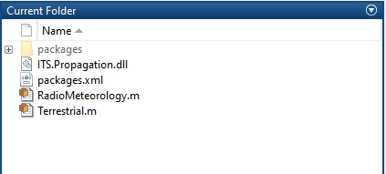

Quick Start - MATLAB
This page is still under construction and has not yet been finalized. Information may be outdated, incorrect, or missing. While this message is visible, contact code@ntia.gov with any questions.
The matpak approach is abandoned in favor of MEX files and this page needs to be updated accordingly.
This page provides a walkthrough on how to quickly get up and running calling the ITS Propagation Library packages from a MATLAB development environment. Included in this is a brief introduction to the internal MATLAB package manager, matpak.
Dependencies and Limitations
Any reasonably newer version of MATLAB should work. Backwards compatibility with older versions of MATLAB is not possible due to not having access to the software. However, versions starting in 2019 have not shown to have any issues.
Support is currently limited to Windows users only. This is due to MATLAB’s use of the .NET Framework, as opposed to the cross-platform .NET Core. MATLAB currently has not given a timeline to switch to .NET Core, however, as Microsoft is moving everything onto .NET Core in the near future, this implies that as some (hopefully soon) future date, cross-platform support can be achieved.
Getting Packages
Add section detailing workflow for installing new packages
Quick Start
Section needs to be updated with new instructions for MEX
This example walks a user will:
- Configure their machine by installing the ITS MATLAB package manager
- Install the PropCore package
- Call into the PropCore library
System Setup
MATLAB support for the ITS Propagation Library relies on an internally developed package manager called matpak. Generally speaking, matpak allows users to download, update, and manage library packages in MATLAB. More information on matpak can be found here.

To install matpak, from the below location:
For ITS users, * \\itsfs01\Tools\Matpak\installers
For OSM (or HCHB) users, * \\nthnetapp002g.ntiadc.ntia.doc.gov\ntiadropbox\itsdata\Matlab\installers
Install the most recent version. Run the installer with User access (not as Admin). Accept the default file location for install. The installer assumes that MATLAB has been installed onto your machine in the default locations (if this is not true, reach out to Billy Kozma).
Setting the Correct Package Location
Note: If you are an ITS user, you should be able to skip this step.
Once the installion has completed, you can verify and update the package location of matpak. To do this, open “Windows Explorer” and nagivate to “Documents”. Inside the “MATLAB” directory, you should see a “matpak” subdirectory which contains a settings.ini file. Open this file in a text editor. The default setting should be:
SOURCE=\\itsfs01\tools\Matpak\packagesThis is the location that matpak will use to search for packages. Update this location according to the package source you have access to (listed in previous subsection).
Installing Packages
Installing packages requires only a single command. To install the PropCore package, run:
>> matpak install propcore
Matpak: Package 'PropCore' (Version 1.0.0) has been installed.
>> 
matpak will install the package files in the current directory. The files can be instead installed into a different location and that directory added to the path at runtime.
Calling PropCore in MATLAB
In a script file or the Command Window, copy the following snippet of code:
theta = Terrestrial.TakeoffAngle(5, 1, 100, 8400)It should result in: theta = -0.0459